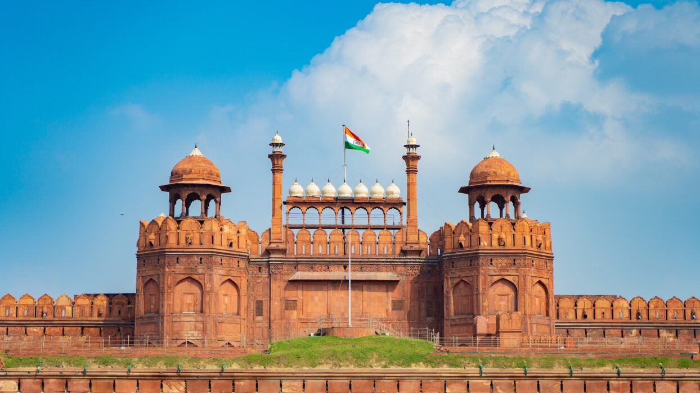
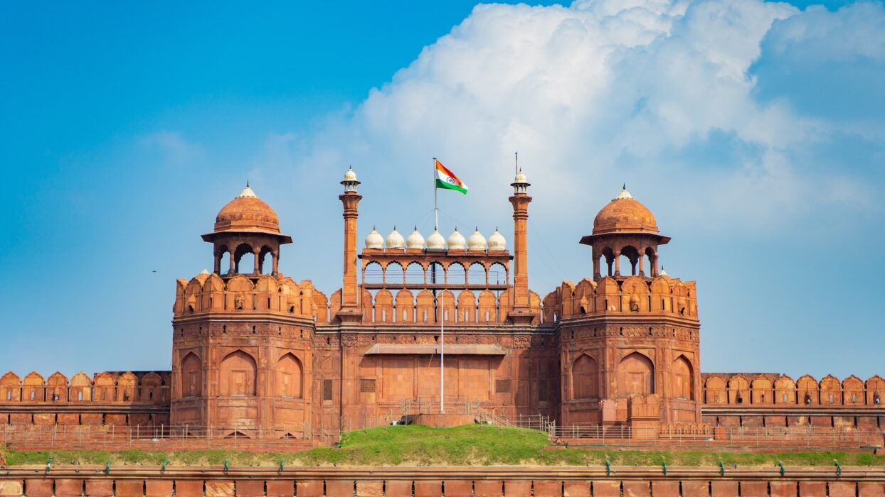

Delhi, the vibrant capital of India, is a city of historical significance and modern dynamism. Rich in culture, it seamlessly blends the ancient and the contemporary, with heritage sites like the Red Fort, Qutub Minar, and Humayun's Tomb reflecting its Mughal past. Delhi's bustling markets, such as Chandni Chowk and Sarojini Nagar, offer a mix of traditional crafts and modern fashion. The city is also known for its mouth-watering street food, including chaat, parathas, and kebabs. Modern landmarks like India Gate and Lotus Temple attract visitors from around the world. With a diverse population, Delhi represents a unique blend of languages, traditions, and lifestyles. Despite its challenges with traffic and pollution, Delhi remains a city of immense charm and resilience.